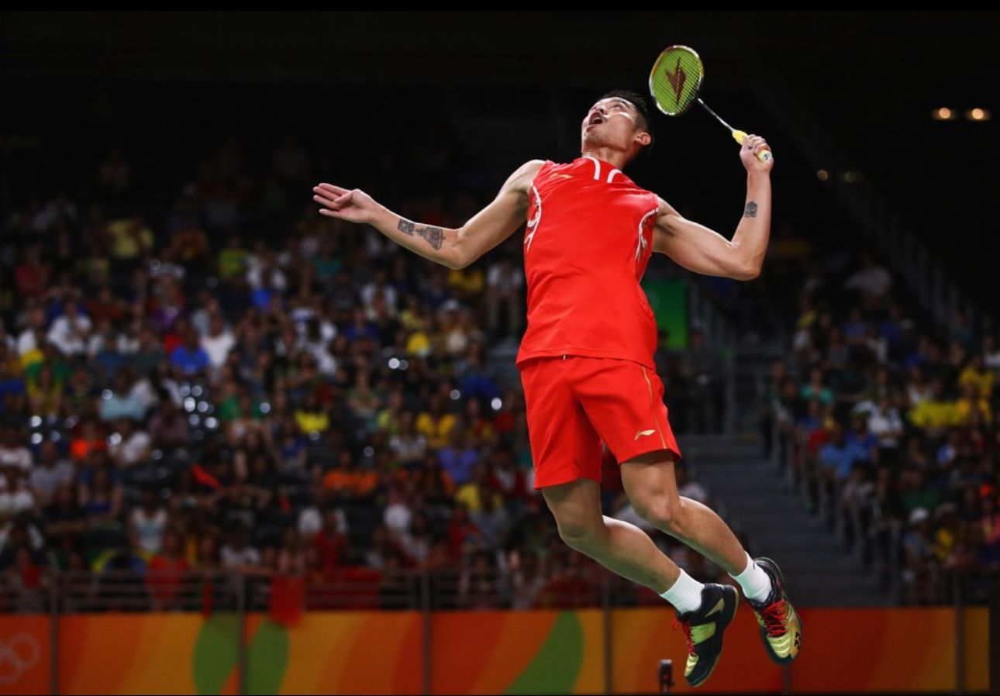
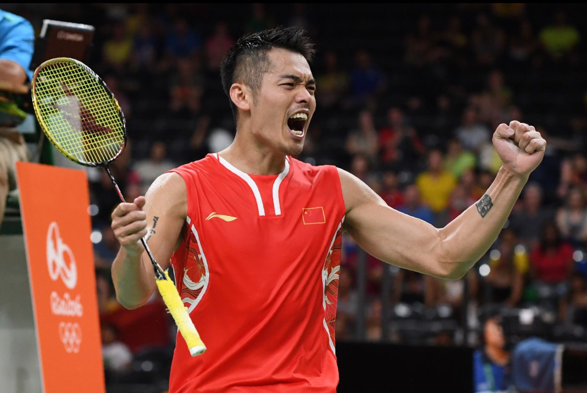

|  | 林丹 中国羽毛球运动员、世界羽毛球名将 |
|
|  | 林丹，汉族，1983年10月14日出生于福建省龙岩市上杭县临江镇，中国羽毛球男单运动员，现已退役。因其在各项世界比赛中夺冠，长时间占据世界排名第一，被称为“超级丹”（SUPER DAN）。林丹于1988年开始接触羽毛球，2000年进入国家队，2002年8月首次登上羽毛球世界排名第一的位置，2005年12月获首个单项世界冠军（世界杯），并于2006年卫冕。2008年北京奥运会、2012年伦敦奥运会，获羽毛球男单冠军。2006、2007、2009、2011、2013年，五次获世锦赛男单冠军。2004、2006、2008、2010、2012、2018年，六次获汤姆斯杯冠军。2005、2007、2009、2011、2015年，五次获苏迪曼杯冠军。2004、2006、2007、2009、2012、2016年，六次获全英赛冠军。其于2010年实现“全满贯”，2014年实现双圈“全满贯”，职业生涯共66个冠军头衔，其中世界冠军20个。 林丹左手握拍，以拉吊突击为主打法，进攻意识强，场上速度快，进攻落点好，攻击犀利，步伐灵活，扣杀较具有威胁。林丹与李宗伟的比赛，被称为“林李大战”，两人代表了他们那个时代世界羽毛球领域男子单打的最高水平。对阵次数40次，林丹28胜12负。随着李宗伟宣布退役，“林李大战”成为历史。 林丹是羽毛球史上第一位集奥运会、世锦赛、世界杯、苏迪曼杯、汤姆斯杯、亚运会、亚锦赛、全英赛、全运会及多座世界羽联超级系列赛冠军于一身的双圈全满贯选手。被誉为中国羽球一哥、世界羽毛球四大天王之一，并于2023年5月入选羽联名人堂 |
中文名 林丹 外文名 Lin Dan 别名 超级丹、Super Dan |
| 点此返回 | ||